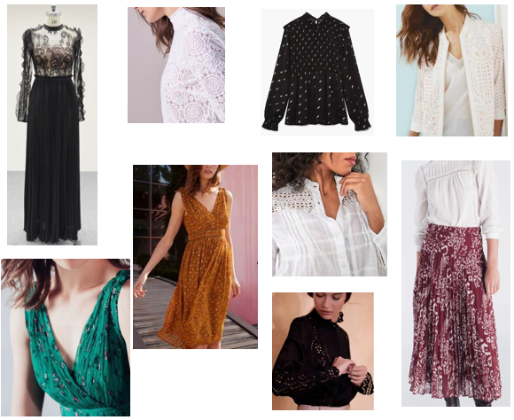
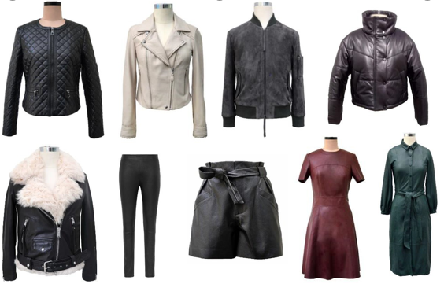
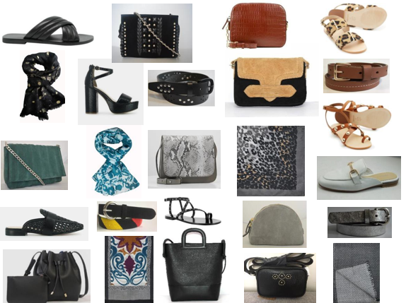
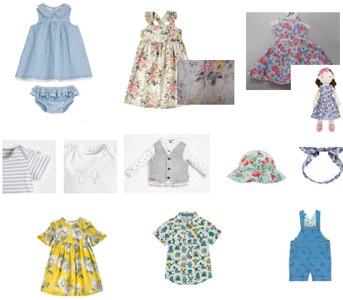
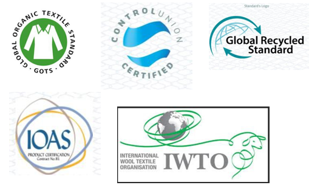

Prêt-à-porter féminin
Véritable expertise sur le Chaîne & Trame flou, les borderies et les imprimés, nous travaillons avec des usines spécialisées dans les matières délicates comme la viscose chiffon, le voile de coton, la soie…
Cuir
Nos usines partenaires sont intégrées verticalement et possèdent leurs propres tanneries validées par LWG et leurs propres usines de production en Inde.
Grâce à leur équipe de style en interne, nos fournisseurs développent leur propres collections et apportent ainsi une veritable expertise aux clients en terme de tendances, de qualité de cuir et de techniques de montage.
Tous les cuirs proposés sont agréés par LGW, les usines sont acréditées par WRAP/ SA 8000/ SEDEX / EMS – 140001/ the HIGG Index et sont également en mesure de proposer du cuir végétal.
Accessoires
Nos travaillons avec des usines spécialisées dans la confection des sacs, de chaussures, de ceintures et également d’écharpes.
Tous les cuirs proposés sont agréés par LGW et peuvent proposer du cuir végétal. Idem pour les écharpes nous travaillons sur des matières recyclées comme la laine et le polysester.
Production pour les enfants et bébés
Nos usines respectent les réglementations techniques et qualitatives en terme de production pour la fabrication des vêtements et accessoires pour enfants et bébés.
Mode Durable
Soucieux de répondre aux enjeux environnementaux et de participer à l’evolution du mode de consommation, AFC développe ses partenariats avec des usines respectueuses des normes sociales et environnementales.
Dans l’objectif de nous rapprocher d’un avenir plus écologique, nous offrons à nos clients différentes matières durables avec des certifications internationales et ce pour les vêtements et également pour les accessoires.
